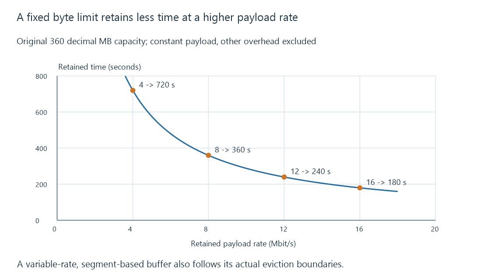

Time-shift buffers and the retained live window
A time-shift buffer retains a bounded portion of an advancing live stream so playback can pause or rewind within media that has not yet been evicted.
Pausing live TV usually stops the viewer’s position while acquisition continues. A time-shift buffer retains earlier media so the viewer can resume behind the advancing channel.
The retained history is finite. A pause can outlast it even while the source and recorder continue working normally.
A byte limit is not a fixed number of minutes
For an original constant-payload model, let capacity be 360 MB, with MB meaning a million bytes.
| Retained payload rate | Time fitting 360 MB |
|---|---|
| 4 Mbit/s | 720 s |
| 8 Mbit/s | 360 s |
| 12 Mbit/s | 240 s |
| 16 Mbit/s | 180 s |
The calculation is time = capacity × 8 / rate. It excludes container overhead, allocation and additional retained data.

At eight Mbit/s, one second uses one MB in this model. At twelve Mbit/s, the same byte limit holds four minutes rather than six.
Variable bitrate makes the retained duration change as older low-rate and high-rate material enters or leaves the window. A configuration expressed in time and one expressed in bytes can therefore impose different effective limits.
The oldest retained point moves during a pause
Assume a full six-minute window at eight Mbit/s and a common media-time origin. Initially the newest usable point is 600 seconds, the oldest retained point is 240 and the viewer is at 540.
| Time after pausing | Newest point | Oldest retained point | Paused viewer |
|---|---|---|---|
| 0 s | 600 | 240 | 540 |
| 300 s | 900 | 540 | 540 |
| 360 s | 960 | 600 | 540 |
After five minutes, the viewer reaches the modeled retention boundary. After six, that original position is sixty seconds older than the retained window.
Continuing source acquisition does not preserve every earlier second. The eviction policy removed old media to respect the capacity.
A real buffer can operate on segment/file boundaries, with its own active-reader rules. Some routes pin data in use, exceed a soft limit or force a playback move instead. Those are implementation choices rather than effects that follow from the word “buffer.”
Segment sizes affect eviction
This original chunk inventory has four six-second segments:
{
"capacityMB": 18,
"segments": [
{"id": 10, "durationSeconds": 6, "sizeMB": 6},
{"id": 11, "durationSeconds": 6, "sizeMB": 9},
{"id": 12, "durationSeconds": 6, "sizeMB": 3},
{"id": 13, "durationSeconds": 6, "sizeMB": 6}
]
}
Together they require 24 MB. Under a whole-segment oldest-first policy, removing segment ten leaves eighteen MB and eighteen seconds.
Removing an arbitrary six MB from the middle would not describe the same contiguous history. Segment retention needs to preserve the chosen timeline and the index/playlist that exposes it.
HLS represents one such media window using an ordered playlist. Its live-playlist rules permit removal from the beginning under specified conditions; an append-only EVENT playlist has different semantics.
Stored bytes need a decodable entry point
Suppose another retained interval begins at media time 120, but its first usable independent video entry point is at 126.
A player asked to begin at 120 may need earlier dependencies that are no longer present. The earliest independently decodable point is later than the earliest retained byte.
The required initialization data, timestamps and audio alignment also need to remain available. A time-bar position alone is not a guarantee that every representation can begin cleanly at that exact point.
Seeking develops those dependencies. The live edge examines the opposite boundary: the newest safely usable presentation.
Rewind history and playback reserve have different jobs
A client’s forward playback reserve holds media ahead of its current presentation so it can absorb delivery variation. A source/server time-shift buffer can retain media behind the live position for rewind.
They can both contain bytes, but increasing one does not automatically expand the other. A viewer can have ample old history while the client has too little upcoming data for smooth playback.
Emby’s DVR settings include a live-stream buffer limit. The actual source/backend and app route establish how that setting relates to pause, rewind, eviction and storage.
A permanent recording retains a separately intended capture under its recording/retention policy. Starting one after earlier live media has already been discarded cannot manufacture that lost history.
See Also
- What is live TV?
- The live playback edge and delivery delay
- Chase playback while a recording grows
- Buffering, ready media and playback reserve